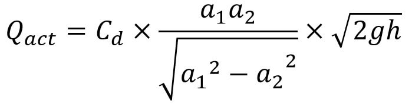

An orifice meter or orifice plate is a device used for measuring the rate of flow of a fluid through a pipe. It works on the same principle as a venturimeter. It consists of a flat circular plate which has a circular sharp edged hole called orifice. It is an opening in the side or bottom of a vessel or a tank through which liquid will flow under the condition that the liquid surface is always above the top edge of the opening. The orifice diameter is 0.5 times the diameter of the pipe. A differential manometer is connected at section 1 which is at a distance of about 1.5 to 2 times the pipe diameter upstream from theorifice plate, and at section 2, which is at a distance of about half the diameter of the orifice on the downstream side from the orifice plate. The basic principle on which a orifice meter works is that by reducing the cross sectional area of the flow of passage, a pressure difference between the two sections is developed and the measurement of the pressure difference enables the determination of the discharge through pipe. However, an orifice meter is a cheaper arrangement for discharge measurement through pipes and its installation requires a smaller length as compared to venturimeter.
CO-FFICIENT OF DISCHARGE:
The actual discharge,
Where
Theoretical discharge
By applying the Bernoulli equation to the upstream section and downstream section an expression for the discharge is obtained.
Theoretical discharge for venturimeter/orifice meter
Where,
Coefficient of discharge,

where,